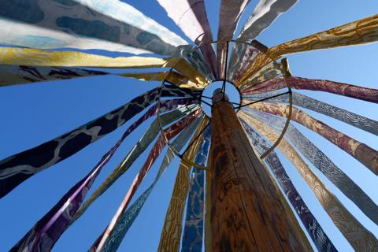
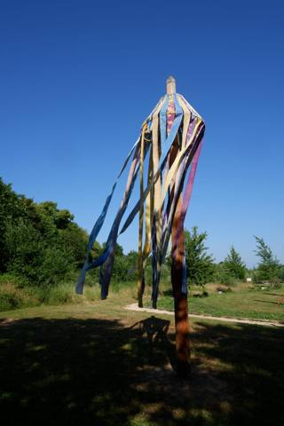
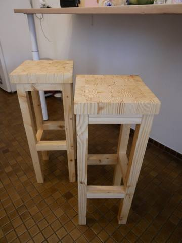
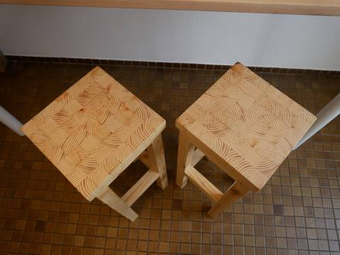
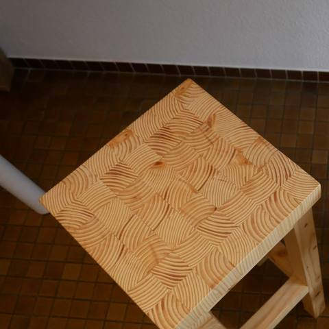
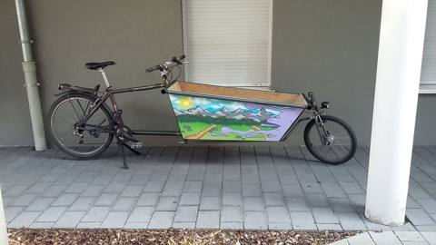

Réalisations
Meubles, outils, vêtements, robots : voici quelques objets que des membres ont fabriqués à La Fabrique, avec les machines et les conseils de l'atelier. Chacun a commencé par une idée et l'envie d'essayer.
Vous avez un projet ? Venez le faire ici, il rejoindra peut-être cette page.


2 photos
Arbre de mai
Par Céline · Juin 2023

Cabane à mésanges
Par Marie · Novembre 2019

Établi
Par Julien et Maud · Octobre 2019



3 photos
Tabourets hauts
Par Arnaud · Septembre 2019

Vélo-cargo
Par Camille · Novembre 2018